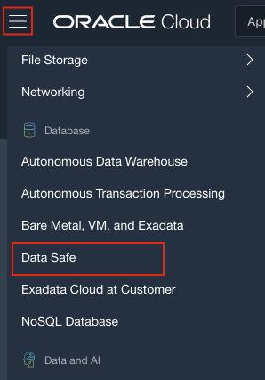
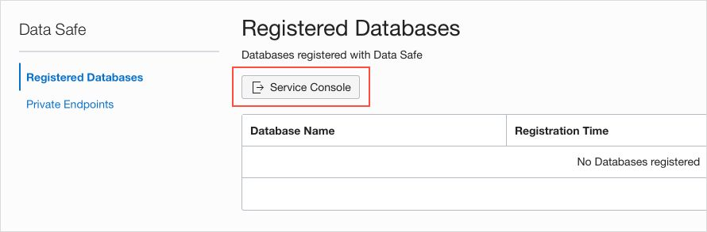
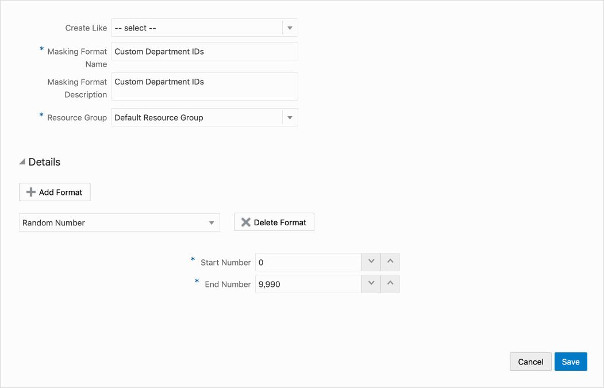
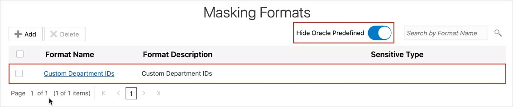

<table class="tbl-heading">
<tr>
<td class="td-logo"> March 25, 2020</td>
<td class="td-banner">
March 25, 2020</td>
<td class="td-banner">
Masking Lab 3 - Create a Masking Format in Oracle Data Safe</td>
</tr>
<table>
Objectives
In this lab, you learn how to do the following:
- Create a masking format.
- Assign a default masking format to a user-defined sensitive type.
Challenge
You have department IDs in your target database that you need to mask. You decide to create a masking format in Oracle Data Safe to mask the data.
Follow these general steps:
- Sign in to your ExaCS database as the SYS user with SQL Developer.
- In SQL Developer, research the
DEPARTMENT_ID column in your target database to help you figure out how to create a masking format for it.
- Sign in to the Oracle Data Safe Console for your region.
- In the Oracle Data Safe Console, create a masking format to mask the
HCM1.DEPARTMENT_ID column in your target database.
- Select your masking format as the default masking format for the sensitive type that you created in Discovery Lab 4 - Create a Sensitive Type and Sensitive Category with Oracle Data Safe (<username> Custom Department ID Number).
Step-by-Step Instructions
Part 1: Connect to your ExaCS database as the SYS user with SQL Developer
Please visit Lab 4: Configuring a development system for use with your EXACS database for instructions to securely configure ExaCS to connect using Oracle SQL Developer, SQLXL and SQL*Plus.
Part 2: In SQL Developer Web, research the DEPARTMENT_ID column in your target database to help you figure out how to create a masking format for it
- Run the following command:
ALTER SESSION SET CONTAINER=PDB1;
- Next run a select on the
DEPARTMENTS table
SELECT * FROM HCM1.DEPARTMENTS;
- Notice that the department ID values are 10, 20, 30, up to 270.
- Click the Data Modeler tab.
- In the first drop-down list, select
HCM1.
- In the second drop-down list, select Tables.
- Drag the
DEPARTMENTS table to the worksheet.
- Notice that the
DEPARTMENT_ID column has the data-type NUMBER(4), which means it can take up to four digits (no decimals). It is also a primary key column.
Part 3: Sign in to the Oracle Data Safe Console for your region
- From the navigation menu, click Data Safe

- You are taken to the Registered Databases Page.
- Click on Service Console

- You are taken to the Data Safe login page. Sign into Data Safe using your credentials.
Part 4: In the Oracle Data Safe Console, create a masking format to mask department IDs
- In the Oracle Data Safe Console, click the Library tab.
- Click Masking Formats, and then click Add.
- The Create Masking Format dialog box is displayed.
- Leave the Create Like drop-down list as is.
- In the Masking Format Name field, enter <username> Custom Department IDs.
- In the Masking Format Description field, enter Custom Department IDs.
- Select your resource group.
- From the Format drop-down list, select Random Number.
- In the Start Number field, enter 10.
- In the End Number field, enter 9990.

- Click Save.<br>
A confirmation message states that you successfully created the masking format.
- Move the Hide Oracle Predefined slider to the right and verify that your masking format is listed.

<table>
<tr><td class="td-logo">
</td>
<td class="td-banner">
All Done!
</td>
</tr>
<table>